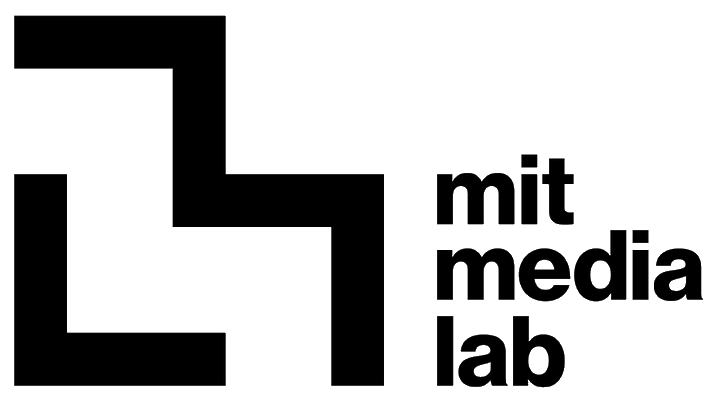
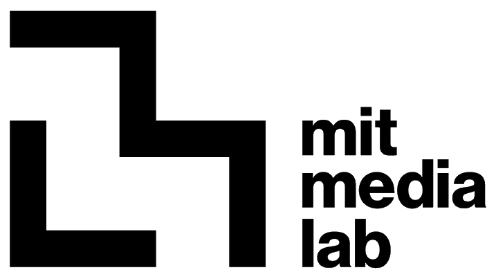

PLUS.ai
Co-Founder

 

AI Ecosystem for Architects & Interior designers
Architecture matters. The space we live in is constantly re-developed. With emerging challenges, social and environmental alike, the ones designing our space can now make better informed decisions with AI.
Plus +’ goal is not just to enhance efficiency, but to share our way of thinking and designing with the world—preserving the architect’s agency and intent.
Value Proposition
A node-based, AI-integrated whiteboard platform that unifies access to design tools, automates documentation, enables checking a project with regulatory frameworks, and optimizes workflows, reducing administrative burden, trainings and enhancing collaboration.
Design smarter. Share your style. Shape the future.
We empower architects and designers to capture their unique style and streamline their workflow with personalized AI agents.
- Upload your data to PLUS.
- Train your personal AI agent using our state-of-the-art AI model.
- Deploy your assistant on our interface to create designs that truly reflect your vision.
But it doesn’t stop there! You can choose to upload your agent to our repository, where it can be saved for future use or shared with the design community. Our growing repository is already packed with AI models to explore and leverage for your projects.
"It will help us to train our people to adopt AI without much training!" — User testing
Design smarter. Share your style. Shape the future.
We empower architects and designers to capture their unique style and streamline their workflow with personalized AI agents.
We offer a tailored range of options for architects and designers—tools specialized for our niche, whether it’s hand-drawing, text-based prompting, or leveraging advanced AI capabilities. Our repository extends this power further, hosting models shared by our team and our community, creating a collaborative ecosystem like no other.
At Plus.ai, our mission is rooted in ensuring intuition and traceability. Designing isn’t linear, and neither are we. That is why we have moved beyond static chatbots to build a spatial, node-based platform—one that thinks the way you do and grows with your creativity.